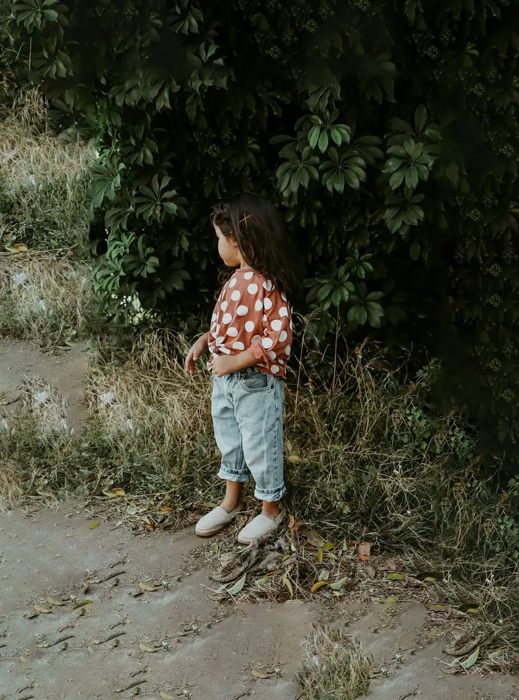
KIDSTALE Kiekviena diena verta naujos istorijos.
Šoku į balas. Renku uogas nuo krūmo ir iš karto į burną. Žaidžiu slėpynes su katinu kieme. Vaikystėje kiekviena diena prasideda lygiai taip pat. Ne nuo plano. Nuo smalsumo. Vieną rytą esi piratas. Kitą – kepėjas. Dar kitą – tyrinėtojas, ieškantis lobių savo kieme. Viskas tampa nuotykiu, jei tik palieki vietos vaizduotei.
Kurdama šį identitetą norėjau, kad jis kalbėtų taip pat. Žaismingai, bet ne triukšmingai. Drąsiai, bet ne garsiai. Kad paliktų vietos ne tik spalvoms ar iliustracijoms, bet ir tam svarbiausiam dalykui – vaikų fantazijai. Todėl vizualinė kalba išliko švari, atvira ir lengvai kintanti. Ji netampa pagrindiniu herojumi. Ji tik sukuria sceną istorijoms, kurias kiekvieną dieną susikuria patys vaikai. O jų, laimei, niekada netrūksta.
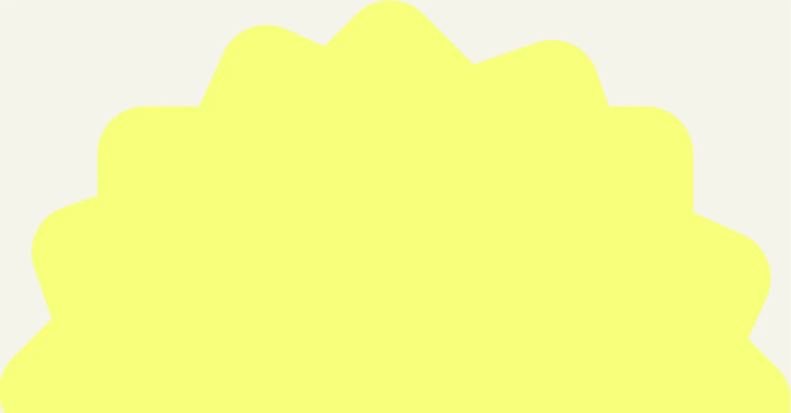
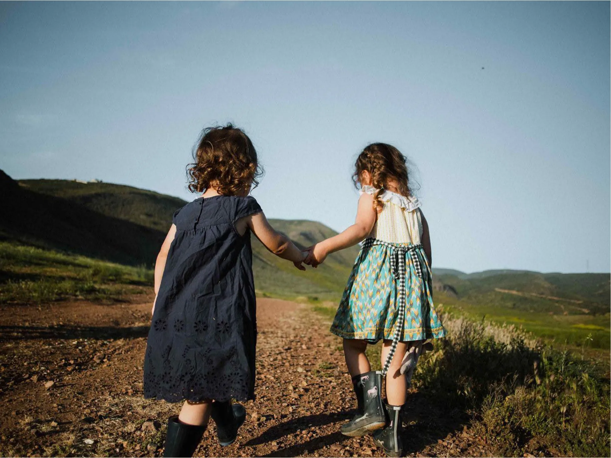
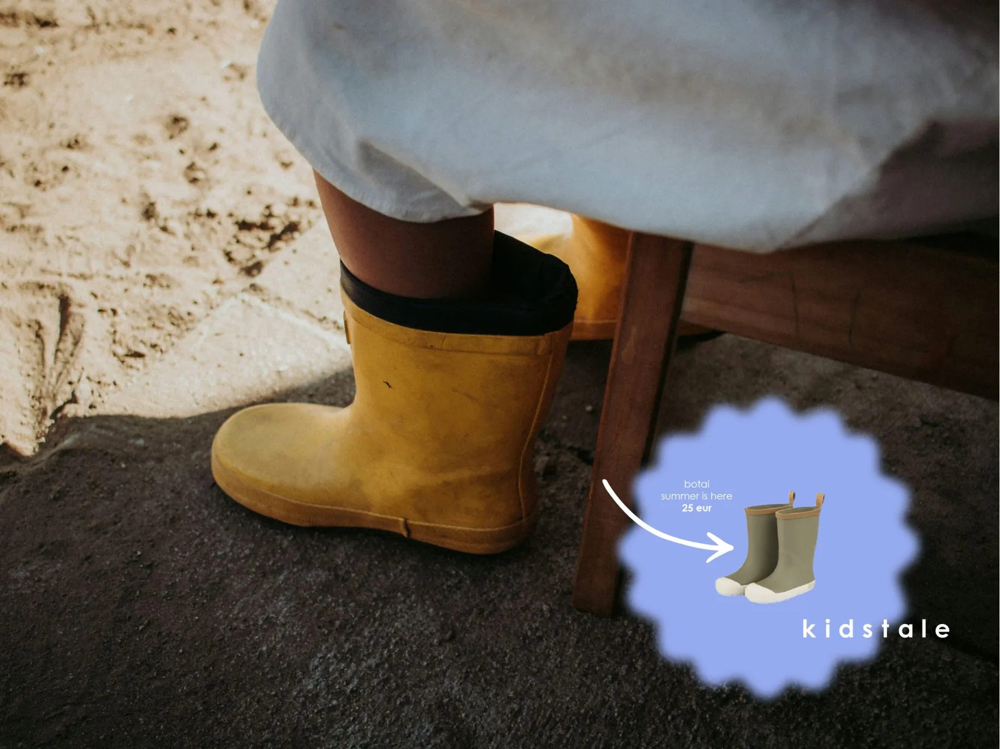
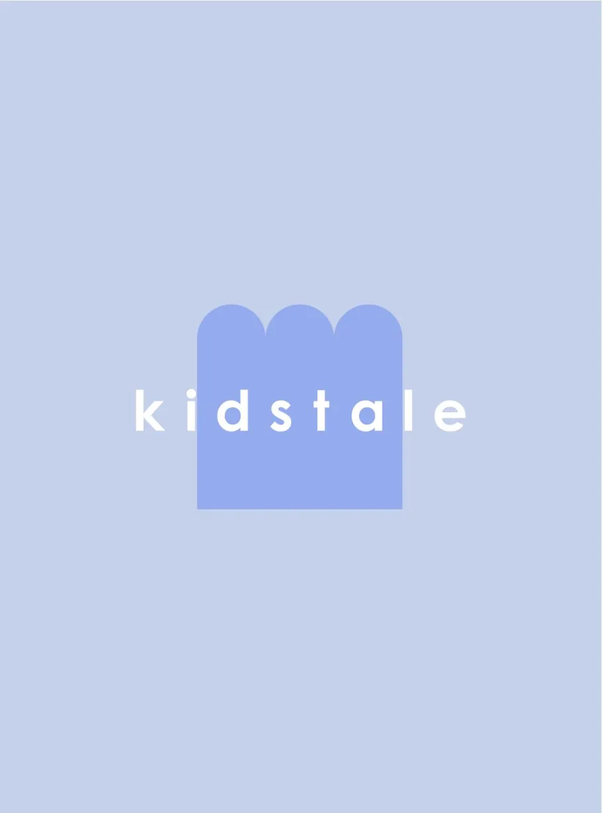
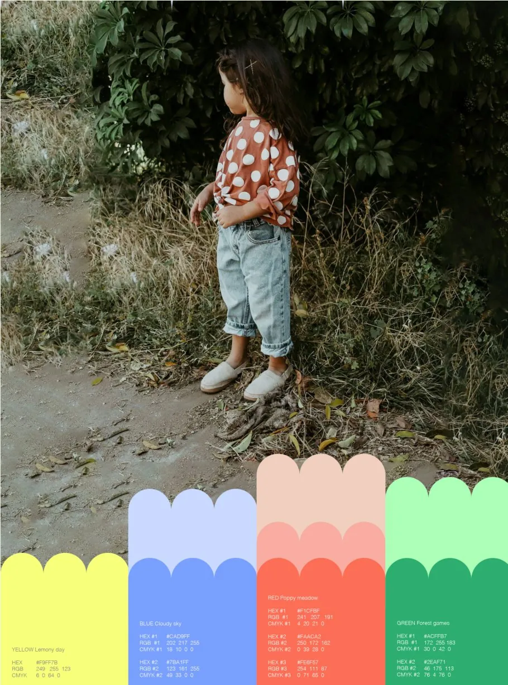
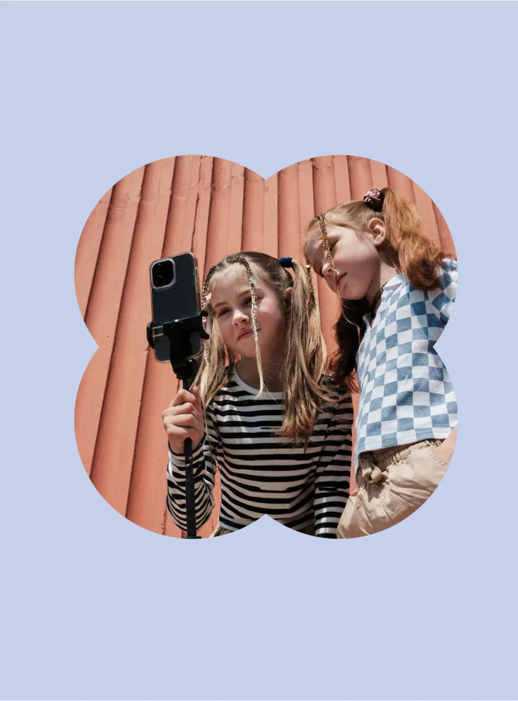
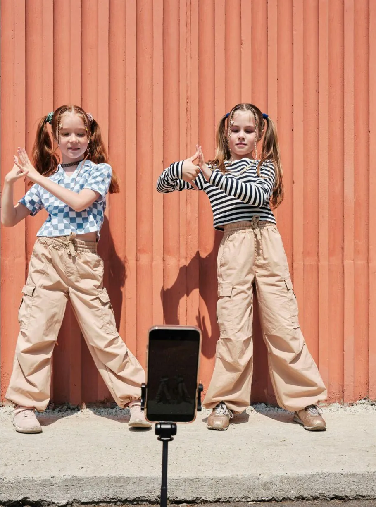
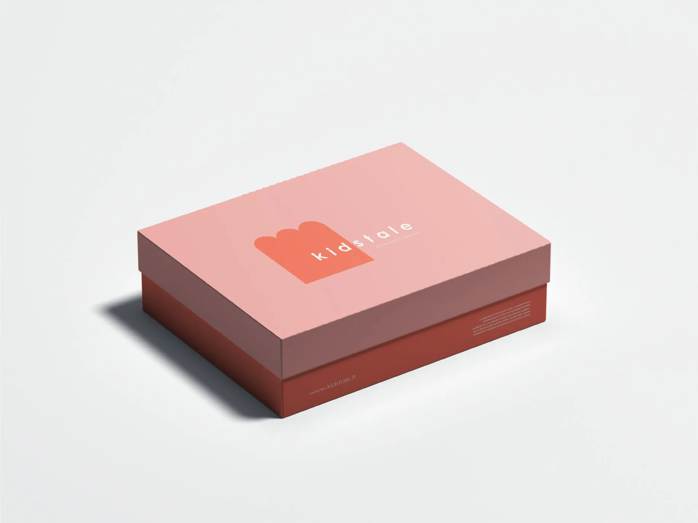
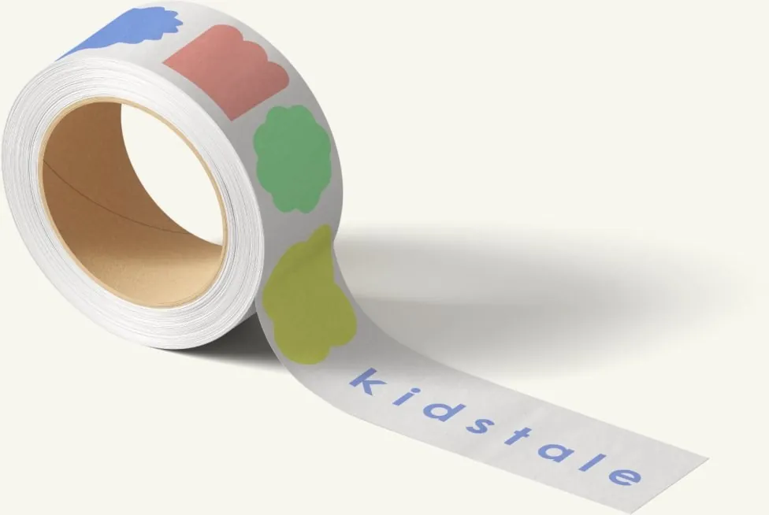
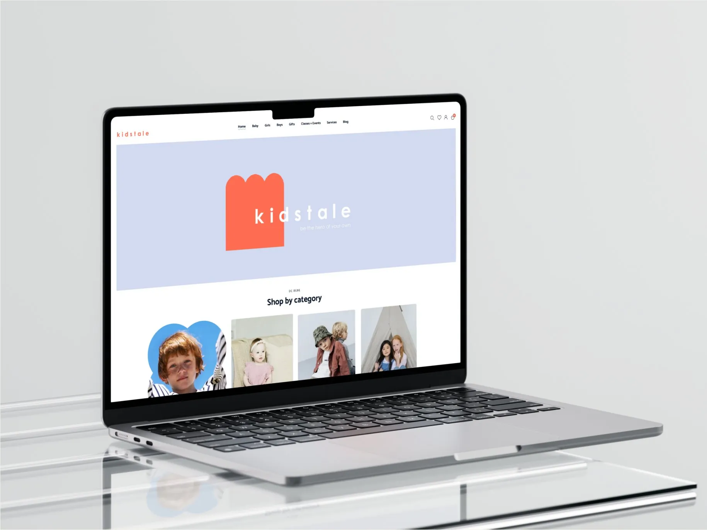
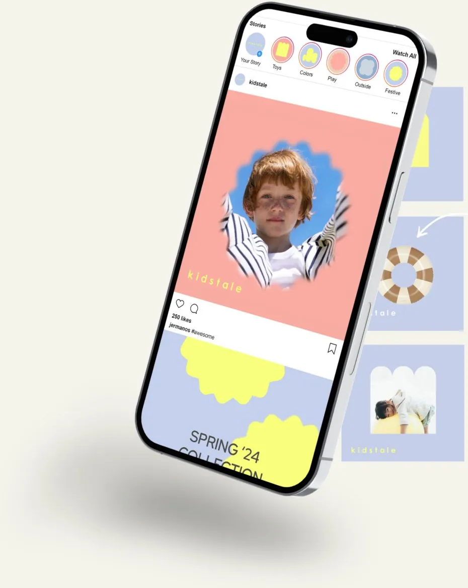
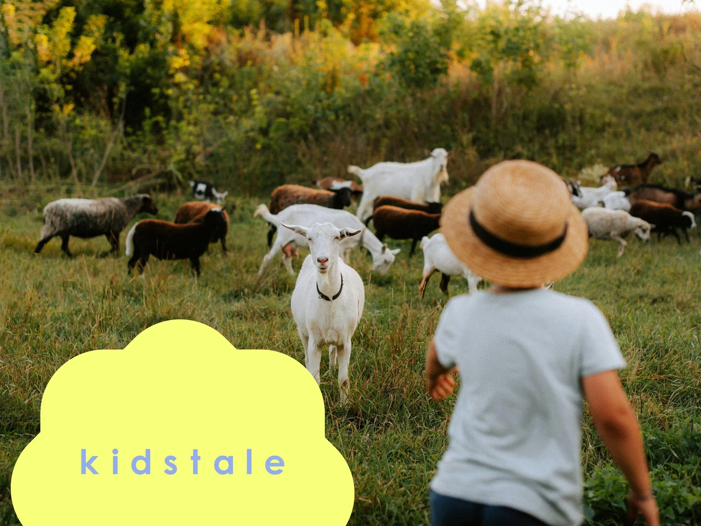